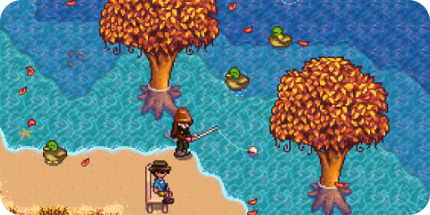
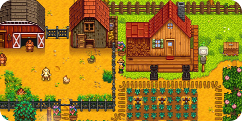
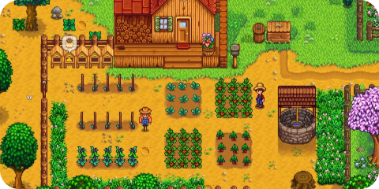

"Stardew Valley" é um popular jogo de simulação de fazenda desenvolvido por ConcernedApe. A história começa quando o jogador herda uma fazenda negligenciada de seu avô na pacata cidade de Pelican Town. O objetivo principal é restaurar a fazenda à sua antiga glória, cultivando culturas, criando animais, minerando recursos e interagindo com os habitantes locais.
Ao longo do jogo, os jogadores podem personalizar suas fazendas de várias maneiras, escolhendo que tipo de culturas cultivar, que animais criar e como expandir suas propriedades. A exploração é uma parte importante do jogo, com cavernas cheias de monstros e tesouros esperando para serem descobertos.
Além da agricultura e da exploração, "Stardew Valley" também se destaca por suas relações sociais. Os jogadores podem construir amizades e até mesmo romances com os habitantes da cidade, cada um com sua própria personalidade e história de fundo.
A cidade oferece uma variedade de festivais e eventos ao longo das estações, adicionando um toque de diversão e interação ocial.
Stardew Valley é elogiado por sua jogabilidade relaxante, gráficos charmosos de pixel art e trilha sonora cativante.
O jogo oferece uma experiência única de simulação de fazenda que permite aos jogadores criar sua própria história e estilo de jogo, tornando-se uma fuga cativante para quem procura escapar para a tranquilidade da vida rural virtual.
Informações adicionais:
Data de lançamento: 26 fev, 2016
Developer: ConcernedApe / Eric Barone.
Editora: Chuckefish Ltd.
Marcadores do jogo: Pixel, Simulação e RPG eletrônico, 2D